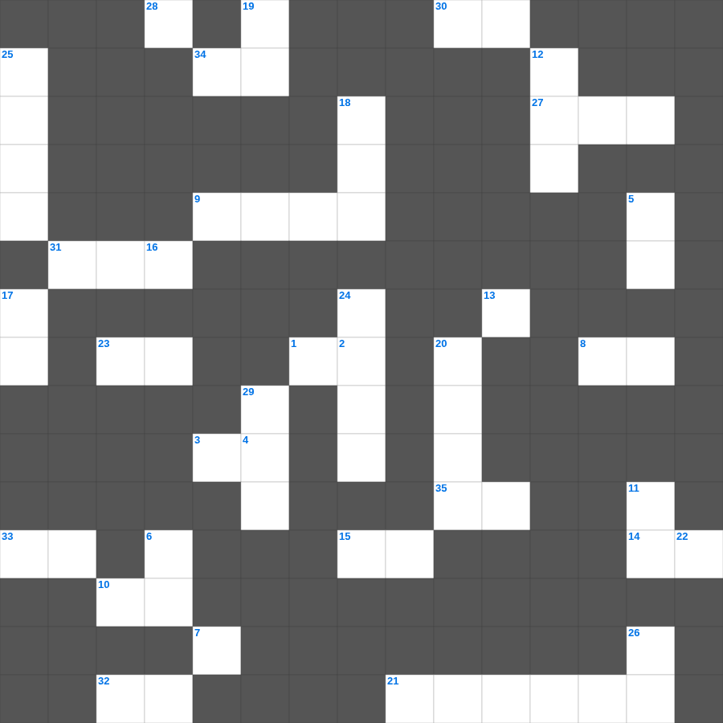

에스더 마스터 100 (1/2)
📌 서비스 정의
십자가로세로는 교회 주보와 주일학교에서 사용할 수 있는 성경 기반 가로세로 퍼즐 서비스입니다. 성경 인물, 사건, 핵심 구절을 바탕으로 제작되었습니다. 온라인 풀이 및 인쇄 기능을 제공합니다.
📖 에스더란?
에스더는 페르시아 제국에서 유대인 왕비가 된 에스더가 동족을 멸망의 위기에서 구해내는 이야기로, 하나님의 이름이 직접 언급되지 않지만 그분의 보이지 않는 손길을 보여줍니다.
📚 에스더의 주요 사건·주제
에스더의 왕비 즉위 · 하만의 유대인 멸절 음모 · 모르드개의 위기 · 에스더의 결단과 잔치 · 부림절의 기원
무료로 즐기는 에스더 에스더 성경 퀴즈 문제! 35개의 힌트로 구성된 가로세로 낱말 퍼즐입니다. PC와 모바일 모두 지원되며, 정답을 바로 확인할 수 있어 혼자서도 쉽게 풀 수 있습니다.

📝 가로 힌트
1. 여호수아가 죽은 후 이스라엘을 다스린 지도자들
3. 누구든지 네 이것함을 업신여기지 못하게 하고 오직 말과 행실과 사랑과 믿음과 순결에 있어서 믿는 자에게 본이 되어
8. 예수께서 예루살렘 성전을 보시고 하신 탄식: 이것의 소굴
9. 너희는 사도들과 선지자들의 터 위에 세우심을 입은 자라 그리스도 예수께서 친히 이것이 되셨느니라
10. 예수의 옷가에 손을 대어 구원받은 여인에게 하신 말씀: 딸아 네 이것이 너를 구원하였으니
13. 악에게 지지 말고 이것으로 악을 이기라
14. 누가복음 마지막 장에서 제자들이 늘 어디에 있어 하나님을 찬송했나
15. 벳새다 맹인을 고치실 때 처음 보인 것: 사람들이 이것들 같은 것들이 걸어가는 것을 보나이다
21. 해가 멈춘 기적의 장소
23. 너희의 온 영과 혼과 몸이 우리 주 예수 그리스도 강림하실 때에 흠 없게 이것되기를 원하노라
27. 고린도전서 15장의 별명
28. 돌아온 아들을 보고 아버지가 한 일: 달려가 이것을 안고 입을 맞추니
30. 아브라함에게 떠나라고 하신 곳 '본토 친척 이것 집'
31. 밤에 밖에서 자기 양 떼를 지키던 이들에게 천사가 나타남
32. 주기도문을 가르치시며: 우리가 우리에게 죄 지은 모든 사람을 이것 하오니
33. 너희 중 누가 이것 함으로 그 키를 한 자라도 더할 수 있느냐
34. 예수께서 풍랑을 잔잔케 하실 때 제자들에게 하신 질문: 어찌하여 이렇게 이것이 없느냐
35. 하나님은 우리를 그리스도 안에서 이것에 속한 모든 신령한 복을 우리에게 주시되
📝 세로 힌트
2. 고린도전서 13장의 별명
4. 바울이 너희의 믿음의 역사와 사랑의 수고와 우리 주 예수 그리스도에 대한 이것의 인내를 기억함
5. 그 후에 내가 내 영을 모든 이것에게 부어 주리니
6. 가장 큰 계명은 무엇이니이까... 첫째는 이것이니 이스라엘아 들으라 주 곧 우리 하나님은 유일한 주시라
7. 복음에는 하나님의 이것이 나타나서 믿음으로 믿음에 이르게 하나니
11. 사랑은 율법의 이것이니라
12. 가버나움에서 예수께 칭찬받은 믿음의 소유자
16. 잃은 양 비유: 양 백 마리가 있는데 그 중의 하나를 잃으면 아흔아홉 마리를 이것에 두고
17. 우리가 선을 행하되 이것하지 말지니
18. 포도원 농부 비유에서 건축자들이 버린 돌이 집 모퉁이의 이것이 되었느니라
19. 내가 이것을 부끄러워하지 아니하노니 이 이것은 모든 믿는 자에게 구원을 주시는 하나님의 능력이 됨이라
20. 모세가 홍해를 가르고 마른 땅처럼 건넌 일
22. 너희 몸은 너희가 하나님께로부터 받은 바 너희 가운데 계신 성령의 이것인 줄을 알지 못하느냐
24. 열 므나 비유: 내가 돌아올 때까지 이것 하라
25. 이삭의 아내, 리브가를 데려온 종의 이름(전승)
26. 하나님이 흙으로 사람을 만드시고 코에 불어넣으신 것
29. 애굽 왕 바로가 꾼 꿈 '일곱 마리 살진 이것'
🧩 이 퍼즐에서 배우는 내용
이 퍼즐은 에스더 마스터 100 (1/2)의 핵심 단어와 개념을 자연스럽게 복습할 수 있도록 구성되었습니다. 주일학교 수업이나 개인 성경공부에서 학습 내용을 점검하는 용도로 바로 활용할 수 있습니다.
🧑🏫 교회 교육 자료 활용
이 퍼즐은 주일학교 교재 추천 자료로 활용할 수 있고, 주일학교 주보에 넣기 좋은 분량으로 구성되어 있습니다. 수업용 주일학교 교안에 활동지로 붙이거나, 예배 후 복습용 주일학교 공과교재로 바로 사용할 수 있습니다.
🏷️ 키워드
에스더 성경 퀴즈 문제, 에스더, 십자가로세로, 성경퀴즈, 말씀퀴즈, 가로세로퍼즐, 주일학교 교재 추천, 주일학교 주보, 주일학교 교안, 주일학교 공과교재